초음파비파괴검사산업기사(구) (2008-07-27 기출문제)
1과목: 초음파탐상시험원리
1. 초음파탐상시험시 공진법에 의한 두께 측정은 다음 중 어떤 현상을 이용하는 것이 가장 효율적인가?
- 시험체의 두께가 초음파 파장의 1/2 일 때 초음파 에너지가 증가하는 방법을 이용한다.
- 시험체의 두께가 초음파 파장의 1/4 이하일 때 초음파 에너지가 손실되는 방법을 이용한다.
- 시험체의 두께가 초음파 파장의 1/2 일 때 초음파 에너지가 손실되는 방법을 이용한다.
- 시험체의 두께가 초음파 파장의 1/4 이하일 때 초음파 에너지가 증가하는 방법을 이용한다.
(정답률: 알수없음)

2. 강재에 대한 굴절각이 60도인 경사각 탐촉자로 회주철을 탐상할 때 굴절각은 약 몇 도가 되는가? (단, 강재에서의 횡파 속도는 3200m/s, 탐촉자 쐐기 재질의 종파속도는 2800m/s, 회주철에서의 횡파 속도는 2400m/s 이다.)
- 41°
- 49°
- 55°
- 70°
(정답률: 알수없음)
3. 다음 중 액체 내를 통과할 수 있는 파형은?
- 횡파
- 종파
- 판파
- 표면파
(정답률: 알수없음)
4. 초음파탐상시험의 수침법에서 시험체에 횡파를 발생 시키는 가장 보편적인 방법은?
- X-Cut 결정체를 사용한다.
- 시험체의 입사면에 수직인 종파를 입사시킨다.
- 다른 주파수로 진동하는 두 개의 결정체를 사용한다.
- 진동자를 고정시킨 장치의 각도를 적절히 변화시킨다.
(정답률: 알수없음)
5. 결정립이 조대한 시험편을 초음파탐상시험할 때 투과력을 높이기 위해서는 다음 중 어떤 주파수를 사용하는 것이 좋은가?
- 1MHz
- 2.5MHz
- 3MHz
- 5MHz
(정답률: 알수없음)
6. 철강재를 탐상하기 위해 굴절각이 70°인 경사각탐촉자를 제작하려면 쐐기의 각도는 약 몇 도로 제작되어야 하는가? (단, 아크릴 내 종파속도는 2730m/s, 철강 내 횡파속도는 3230m/s 이다.)
- 33°
- 43°
- 53°
- 70°
(정답률: 알수없음)
7. 열처리의 영향에 따른 전기전도도의 변화를 측정할 수 있는 비파괴검사법은?
- 자분탐상시험
- 음향방출시험
- 와전류탐상시험
- 초음파탐상시험
(정답률: 알수없음)
8. 비파괴검사의 안전관리에 대한 설명 중 옳은 것은?
- 방사선투과시험에 취급되는 저방사선의 경우 안전 관리에 특별히 유의할 필요는 없다.
- 초음파탐상시험에 취급되는 초음파가 강력한 경우 유자격자에 의한 관리·지도를 반드시 의무화 하여야 한다.
- 형광침투액을 이용하는 탐상시험에 사용되는 자외선 조사등은 눈에 영향을 주지 않으므로 그에 대한 대책은 불필요하다.
- 유기용제를 사용하는 침투탐상시험에는 방화대책이나 환기 등의 안전관리에 특히 주의할 필요가 있다.
(정답률: 알수없음)
9. 초음파탐상시험에서 공진법으로 시험체의 두께를 측정할 때 2MHz 의 주파수에서 기본공명이 발생했다면 이 시험체의 두께는 몇 mm 인가? (단, 시험체내의 초음파 속도는 4800m/s 이다.)
- 1.2
- 2.4
- 3.6
- 4.8
(정답률: 알수없음)
10. 다음 중 침투탐상시험법의 장점이 아닌 것은?
- 거의 무든 재질과 제품에 적용이 가능하다.
- 검사 방법이 간편하고 결과를 즉시 알 수 있다.
- 시험체는 침투제와 반응하여 보호막을 형성한다.
- 시험체의 크기, 형상에 크게 영향을 받지 않는다.
(정답률: 알수없음)
11. 비파괴검사법 중 시험체의 내부와 외부의 압력차를 이용, 기체나 액체가 결함부를 통해 흘러 들어가거나 나오는 것을 감지하는 방법으로 압력용기나 배관등에 적용하기 적합한 시험법은?
- 누설검사
- 침투탐상검사
- 자분탐상시험
- 초음파탐상시험
(정답률: 알수없음)
12. 비파괴검사의 목적으로 볼 수 없는 것은?
- 검사 종류별 최신 장비만을 사용하여야 한다.
- 재료의 낭비를 줄이므로 생산성을 증가시킨다.
- 사고를 예방하여 인명과 재산 손실을 방지한다.
- 품질수준을 높이고 균질성을 개선, 고객에게 만족한 제품을 생산한다.
(정답률: 알수없음)
13. 쿨롱의 법칙에서 두 자극 사이에 작용하는 힘(F)을 구하는 식으로 옳은 것은? (단, 자극의 세기는 각각 m, m', 투자율은 μ, 자극 간의 간격은 r 이다.)
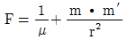
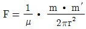
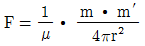
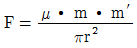
(정답률: 알수없음)
14. 철강 재료의 와전류탐상시험에 의한 재질 시험에서 지시에 가장 큰 영향을 주는 인자는 다음 중 무엇인가?
- 투자율
- 열전도도
- 인장강도
- 전기전도도
(정답률: 알수없음)
15. 미시 방사선투과시험(micro radiography)에 사용되는 에너지의 범위로 옳은 것은?
- 5~50kV
- 60~150kV
- 180~250kV
- 350~500kV
(정답률: 알수없음)
16. 다음 중 알루미늄 재료에 적용할 수 없는 비파괴검사법은?
- 침투탐상시험
- 자분탐상시험
- 초음파탐상시험
- 와전류탐상시험
(정답률: 알수없음)
17. 비파괴평가 기법을 능동적 기법과 수동적 기법으로 나눌 때 다음 중 능동적 기법에 해당하는 것은?
- 누설검사법
- 잡음 해석법
- 음향방출시험법
- 초음파탐상시험법
(정답률: 알수없음)
18. 다음의 비파괴검사법 중 인체의 유해성이 가장 큰 시험법은?
- 자분탐상시험
- 초음파탐상시험
- 방사선투과시험
- 와전류탐상시험
(정답률: 알수없음)
19. 누설검사법 중 가압법을 적용한 압력변화시험의 장점을 설명한 것으로 틀린 것은?
- 누설의 양을 측정할 수 있다.
- 누설의 위치 확인이 매우 쉽다.
- 시험체의 크기에 관계없이 검사가 가능하다.
- 측정 게이지로 누설 여부를 즉시 알 수 있다.
(정답률: 알수없음)
20. 수세성 형광침투탐상시험의 특성에 대한 설명으로 틀린 것은?
- 수도시설, 암실, 전원 및 자외선 조사장치가 필요하다.
- 나사부 형상과 같은 복잡한 시험체는 탐상할 수 없다.
- 소형 및 다량의 제품을 1회의 작업으로 탐상할 수 있다.
- 과세척의 우려가 있어 폭이 넓고 얕은 결함의 탐상이 곤란하다.
(정답률: 알수없음)
2과목: 초음파탐상검사
21. 초음파탐상기의 조정기 중 리젝션(rejection) 손잡이를 조정하면 나타나는 현상으로 옳은 것은?
- 분해능이 나빠진다.
- 파형을 평활하게 한다.
- 잡음 에코를 억제한다.
- 증폭의 직선성을 높여 준다.
(정답률: 알수없음)
22. 초음파탐상검사에서 표준이 되는 시험편으로 장비를 조정하는 과정을 무엇이라고 하는가?
- 감쇠
- 교정
- 사각 탐상
- 상호 조정
(정답률: 알수없음)
23. 용접부의 경사각탐상시 주로 검출되는 불연속의 종류가 아닌 것은?
- 기공
- 균열
- 언더컷
- 라미네이션
(정답률: 알수없음)
24. 주·단강품의 초음파 탐상감도를 조정할 때 표준시험편을 사용하여 그 표준구멍으로부터의 에코가 정해진 높이가 되도록 탐상기의 감도를 조정하는 시험편방식의 장점으로 볼 수 없는 것은?
- 탐상감도를 나타내기가 용이하다.
- 공정간에 탐상한 상호의 데이터들의 비교가 비교적 용이하다.
- 시험편과 시험체의 감쇠 차이에 의한 결함에코높이 차이의 보정이 불필요하다.
- 시험체와 동일한 종류의 강이며 검출목적에 맞는 깊이 및 크기의 인공결함을 임의로 만들 수 있다.
(정답률: 알수없음)
25. 초음파탐상검사에 대한 다음 설명 중 옳은 것은?
- 경사각탐상시 전후주사는 용접선에 대해 전후 방향으로 탐촉자를 주사하는 것이다.
- 동일 크기의 결함인 경우 초음파탐상시 가장 높은 결함에코가 검출되는 것은 초음파의 진행방향에 평행한 균열이다.
- 경사각탐상은 탐상면에 대해 경사지게 초음파를 입사시키는 방법으로 결함의 위치추정은 가능하나 크기추정은 불가능하다.
- 수직탐상은 탐상면에 대해 수직되게 초음파를 입사시키는 방법으로 결함의 크기추정은 가능하나 위치와 두께의 측정은 불가능하다.
(정답률: 알수없음)
26. 거리진폭교정곡선(DAC)은 무엇 때문에 생긴 신호의 손실을 보상하는 방법인가?
- 시험체의 길이
- 시험체의 자속밀도
- 시험체 속에서의 음속
- 탐상거리의 증가에 따른 감쇠
(정답률: 알수없음)
27. 그림과 같이 환봉을 수직탐상하는 경우 옳은 설명은?
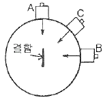
- A방향은 C방향보다 결함에코 높이가 높다.
- C방향은 B방향보다 결함에코 높이가 높다.
- B방향은 A방향보다 결함에코 높이가 높다.
- A방향에서 탐상하면 결함에코를 전혀 잡을 수 없다.
(정답률: 알수없음)
28. 용접부에 대한 경사각탐상시 음파가 표면 용접 덧붙 임부에 그림과 같이 반사되어 결함처럼 보인다. 접촉매질이 묻은 손으로 반사되는 부분을 문지를 때 이 반사에코의 변화에 대하여 옳게 설명한 것은?
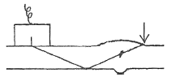
- 에코가 사라진다.
- 에코높이가 높아진다.
- 에코높이가 약간 낮아진다.
- 에코높이가 전혀 변화하지 않는다.
(정답률: 알수없음)
29. 다음 중 시험체의 두께 측정에 가장 널리 사용되는 초음파탐상검사 방법은?
- 2탐촉자법
- 표면파 탐상법
- 투과 탐상법
- 공진법 또는 펄스반사법
(정답률: 알수없음)
30. 그림의 탐상도형은 어떤 표시방법에 대한 것인가?
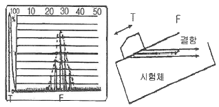
- MA표시(MA-scope)
- 단면표시(B-scope)
- 기본표시(A-scope)
- 평면표시(C-scope)
(정답률: 알수없음)
31. 다음의 압전 재료 중에서 송신 효율이 가장 좋은 것은?
- 수정(Quartz)
- 산화은(Silver Oxide)
- 황산리튬(Lithium Sulfate)
- 티탄산바륨(Barium Titanate)
(정답률: 알수없음)
32. 초음파가 매질 내 원거리음장 영역의 어느 지점(x)에서의 음압을 나타내는 공식으로 옳은 것은? (단, Px : 거리 y 에서의 음압, y : 진동자로부터의 거리, Po : 진동자 전면에서의 음압, λ : 파장, D : 진동자의 직경이다.)
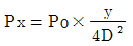
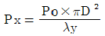
- Px=Po×λDy2
- Px=Po×λyD2
(정답률: 알수없음)
33. 측정범위 250mm로 단강품(표면거칠기 25S)을 수직 탐촉자 2C2ON 으로 탐상할 때, 건전부에서 그림과 같은 탐상도형이 얻어졌다. 이 조건에서 반사손실의 영향은 매우 적기 때문에 무시하면, 이 단강품의 감쇠계수는 몇 dB/m인가?
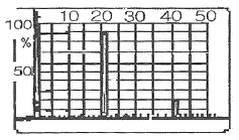
- 10
- 13
- 18
- 25
(정답률: 알수없음)
34. 용접부의 경사각탐상에 대한 다음 설명 중 옳은 것은?
- 측면의 용입불량(루트혼입불량)은 모드변환손실이 있기 때문에 검출이 곤란하다.
- 비드에서의 에코는 결함에코보다 항상 작게 나타나기 때문에 무시해도 좋다.
- 동일 탐상면에서 탐상하면 모든 용접부의 결함은 1회반사법보다 직사법이 에코높이가 높게 나타난다.
- 면상결함은 결함에 초음파의 입사각도가 바뀌면 에코높이는 현저히 변화한다.
(정답률: 알수없음)
35. 집속(focus type) 탐촉자를 사용할 때 필요한 사항이 아닌 것은?
- 집속거리
- 집속범위
- 집속빔 폭
- 집속 노이즈 크기
(정답률: 알수없음)
36. 다음 중 주조재, 단조재 등의 내부결함 탐상 및 두께 측정에 주로 사용되는 탐상법은?
- 수직 탐상법
- 판파 탐상
- 표면 탐상법
- 경사각 탐상법
(정답률: 알수없음)
37. 초음파 탐상기에서 브라운관의 에코 밝기는 무엇에 의하여 조절하는가?
- 게인(gain)
- 클립핑(clipping)
- 펄스 반복주파수
- 소인길이(Sweep length)
(정답률: 알수없음)
38. 다음 중 전기적인 에너지를 기계적인 에너지로, 기계적인 에너지를 전기적인 에너지로 변환시킬 수 있는 재료를 무엇이라 하는가?
- 초전도재료
- 반도체재료
- 압전재료
- 유전재료
(정답률: 알수없음)
39. 다음 중 동축케이블을 연결하는 탐촉자의 컨넥터로 사용되지 않는 형태는?
- VHF형
- BNC형
- UHF형
- LEMO형
(정답률: 알수없음)
40. 다음 중 경사각용 시험편으로 조합된 것은?
- STB-A1, STB-A2
- STB-G, STB-A1
- STB-A2, STB-N1
- STB-RB, STB-G
(정답률: 알수없음)
3과목: 초음파탐상관련규격 및 컴퓨터활용
41. 초음파 탐상시험용 표준시험편(KS B 0831)중에서 A1형 표준시험편의 재료 종류로 옳은 것은?
- SUJ2
- STB4
- SM400
- SNCM439
(정답률: 알수없음)
42. 보일러 및 압력용기에 대한 표준초음파탐상검사(ASME Sec.V, Art.23 SA-388)에서 대형 단강품의 탐상시 탐촉자의 주사속도와 중복 범위로 옳은 것은?
- 주사속도 152mm/s 이하, 중복범위 최소 15%
- 주사속도 200mm/s 이하, 중복범위 최소 10%
- 주사속도 152mm/s 이상, 중복범위 최소 10%
- 주사속도 200mm/s 이상, 중복범위 최소 15%
(정답률: 알수없음)
43. 보일러 및 압력용기에 대한 재료의 초음파탐상검사(ASME Sec.V, Art.5)에 따라 튜브류를 탐상시 사용하는 교정시험편의 교정 반사체(calibration reflectors)에 관한 내용으로 틀린 것은?
- 형태는 축방향 노치(notch) 이다.
- 길이는 약 1인치 또는 그 이하이다.
- 폭은 1.6mm 이하이어야 한다.
- 깊이는 0.1mm 또는 공칭 벽 두께의 5% 중 큰 쪽을 초과하여야 한다.
(정답률: 알수없음)
44. 강용접부의 초음파탐상 시험방법(KS B 0896)에서 용접부에 용접 후 열처리에 대한 지정이 있는 경우 합격 여부 판정을 위한 탐상 시기는 언제인가?
- 열처리하기 바로 전
- 최종 열처리한 후
- 기계가공하기 전
- 기계가공 후 열처리하기 바로 전
(정답률: 알수없음)
45. 보일러 및 압력용기에 대한 표준초음파탐상검사(ASME Sec.V, Art.23 SA-435)에서 강판의 수직빔으로 2인치 두께를 갖는 강판을 검사할 때, 전체 저면반사의 손실을 일으키는 불연속부의 지름이 2인 치인 경우 평가는?
- 합격이다.
- 불합격이다.
- 시험편 방식으로 재검사한다.
- 저면반사 손실은 합부판정 기준이 아니다.
(정답률: 알수없음)
46. 알루미늄의 맞대기 용접부의 초음파 경사각탐상 시험방법(KS B 0897)에 따른 시험결과의 분류에서 모재의 두께가 40mm 이고, 1류의 판정이 내려진 경우 허용되는 흠의 최대길이는 얼마 이하인가? (단, 분류는 B종 흠인 경우이다.)
- 10mm
- 20mm
- 30mm
- 40mm
(정답률: 알수없음)
47. 강 용접부의 초음파탐상 시험방법(KS B 0896)에서 탐상장치 중 경사각 탐촉자의 성능점검시 특별한 보수를 하지 않은 상태에서 작업시간 8시간 이내마다 점검을 하여야 하는 것은?
- 불감대
- 빔 중심축의 치우침
- 입사점 및 굴절각
- 경사각 탐촉자의 감도
(정답률: 알수없음)
48. 보일러 및 압력용기에 대한 표준초음파탐상검사(ASME Sec.V, Art.23 SA-577)에서 탐상을 하기 위해 선택되는 초음파 주파수는 필요한 교정 노치를 검출할 수 있는 가장 높은 주파수를 선택하여 지시의 진폭이 최소한 얼마의 신호 대 잡음비를 나타내 도록 하여야 하는가?
- 3 : 1
- 6 : 1
- 10 : 1
- 20 : 1
(정답률: 알수없음)
49. 보일러 및 압력용기에 대한 초음파탐상검사(ASME Sec.V, Art.4)에서 관경 20인치 이하의 곡률을 가진 모든 시험체를 완전히 적용할 수 있게 하려면 곡률이 다른 곡면대비시험편은 최소 몇 개를 만들어야 하는가?
- 4개
- 5개
- 6개
- 8개
(정답률: 알수없음)
50. 보일러 및 압력용기에 대한 표준초음파탐상검사(ASME Sec.V, Art.23 SA-609)에서 주강품의 탐상에 사용되는 대비시험편의 인공결함에 대한 설명이다. 옳은 것은?
- 3/64 ~ 8/64인치까지의 크기로 배열되어 있다.
- 단독의 인공결함 구멍지름은 1/4인치이다.
- 1 ~ 8인치 범위를 포함하는 깊이로 되어 있다.
- 인공결함의 형상은 모두 측면공이다.
(정답률: 알수없음)
51. 보일러 및 압력용기에 대한 초음파탐상검사(ASME Sec.V, Art.4)에 따라 니켈합금을 탐상할 때 접촉매질에 함유된 황(S) 함량을 제한하고 있다. 얼마 이하로 규정하고 있는가?
- 5ppm
- 50ppm
- 150ppm
- 250ppm
(정답률: 알수없음)
52. 강 용접부의 초음파탐상 시험방법(KS B 0896)에서 형떼기 게이지를 사용하여 각 부위의 실체도를 그리고, 탐촉자 용접부 거리 및 빔노정을 실체도에서 구해야 하는 용접부는 다음 중 어느 것인가?
- 강판 T이음 용접부
- 노즐 이음 용접부
- 강관 길이 이음 용접부
- 강관 원둘레 이음 용접부
(정답률: 알수없음)
53. 보일러 및 압력용기에 대한 표준초음파탐상검사(ASME Sec.V, Art.23 SA-388)에서 대형 단강품의 탐상시 수직탐촉자로 탐상할 때 보고서에 기록해야 할 지시 내용으로 옳은 것은?
- 저면 반사법에서 1개의 지시가 건전부의 저면 반사지시의 10%를 초과할 때
- 대비시험편법에서 1개의 지시가 대비 증폭기준선의 40%를 초과할 때
- 대비시험편법에서 5개 이상의 집합적인 지시가 대비 증폭기준선의 20 ~ 40% 이하일 때
- 저면 반사법에서 5개 이상의 집합적인 지시가 건전부의 저면 반사지시의 3 ~ 5% 미만일 때
(정답률: 알수없음)
54. 탄소강 및 저합금강 단강품의 초음파탐상 시험방법(KS D 0248)에 의한 흠의 기록 및 평가 방법에서 미리 인수·인도 당사자 사이에 협정하지 않아도 되는 것은?
- 흠의 깊이
- 흠 에코 높이
- 밑면 에코의 저하량
- 단강품의 평가에 필요한 기록
(정답률: 알수없음)
55. 압력용기용 강판의 초음파탐상 검사방법(KS D0233)에서 이진동자 수직탐촉자를 사용하여 탐상하였을 때 결함의 정도가 가벼움에 해당될 때의 표시 기호로 옳은 것은?
- ○
- X
- △
- □
(정답률: 알수없음)
56. 다음이 설명하고 있는 기억장치는?
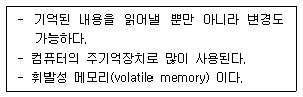
- RAM
- ROM
- BIOS
- CMOS
(정답률: 알수없음)
57. 국내 인터넷 주소를 표기할 때 포함되지 않는 것은?
- 호스트명
- 소속기관
- 소속국가
- 사용자 ID
(정답률: 알수없음)
58. 컴퓨터 네트워크에서 상대방의 컴퓨터가 켜져 있는지 확인하기 위해서 사용할 수 있는 명령어는?
- PING
- ARP
- RARP
- IP
(정답률: 알수없음)
59. 전자우편(E-mail)의 주소형식에 포함되지 않는 것은?
- 사용자 ID
- 패스워드
- @
- 메일서버의 주소
(정답률: 알수없음)
60. 통신에서 데이터 신호 속도를 나타내는 단위는?
- mps
- bit
- bps
- word
(정답률: 알수없음)
4과목: 금속재료 및 용접일반
61. 납땜의 용제가 갖추어야 할 조건 중 틀린 것은?
- 청정한 금속면의 산화를 방지할 것
- 전기저항 납땜에 사용되는 것은 부도체일 것
- 용제의 유효 온도 범위와 납땜 온도가 일치할 것
- 납땜의 표면장력에 맞추어 모재와의 친화력을 높일 것
(정답률: 알수없음)
62. 가스 용접시 중압식 토치에 사용되는 아세틸렌의 압력(kgf/cm2) 범위로 가장 적당한 것은?
- 0.01 ~ 0.2
- 1.5 ~ 1.8
- 0.07 ~ 1.3
- 1.8 ~ 2.5
(정답률: 알수없음)
63. 주로 겹치기 용접에 많이 이용되는 용접은?
- 슬롯 용접
- 필릿 용접
- V형 용접
- H형 용접
(정답률: 알수없음)
64. 가스 압접법의 특징 설명으로 틀린 것은?
- 압접 소요시간이 짧다.
- 원리적으로 전력이 필요 없다.
- 용가재 및 용제가 불필요하다.
- 매우 숙련된 작업자가 필요하다.
(정답률: 알수없음)
65. 보기 그림에서 필릿 용접의 목 길이에 해당하는 것은?
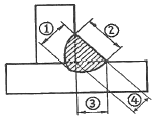
- ①
- ②
- ③
- ④
(정답률: 알수없음)
66. 용접부의 시험 중 화학적 시험인 것은?
- 피로 시험
- 굽힘 시험
- 충격 시험
- 부식 시험
(정답률: 알수없음)
67. 용접봉의 용융속도를 나타내는 것으로 가장 적합한 것은?
- 단위 시간당 소비되는 용접봉의 길이 또는 무게
- 단위 시간당 소비되는 아크전압
- 단위 시간당 소비되는 아크전류
- 단위 시간당 진행되는 용접속도
(정답률: 알수없음)
68. 피복금속 아크 용접에서 아크 전압이 20V, 아크 전류는 150A, 용접속도를 200cm/min 라 할 때 용접 입열량은 몇 Joule/cm 인가?
- 900
- 1200
- 1500
- 2000
(정답률: 알수없음)
69. 후판용접에 사용되며 수냉 동판을 용접부 양편에 부착하고 용융된 슬래그 속에서 전극와이어를 연속적으로 송급하여 용융 슬래그 내를 흐르는 전류의 저항열을 이용하는 용접 방법은?
- 불활성 가스 텅스텐 아크 용접
- 불활성 가스 금속 아크 용접
- 일렉트로 슬래그 용접
- 서브머지드 아크 용접
(정답률: 알수없음)
70. 속이 빈 피복 용접봉과 모재 사이에서 아크를 발생시켜 모재를 가열하고 봉의 가운데 구멍으로 절단 산소를 불어내어 가스 절단을 하는 방법은?
- 분말 절단
- 산소창 절단
- 산소 아크 절단
- 가스 가우징
(정답률: 알수없음)
71. 다음 중 마텐자이트 변태에 대한 설명으로 틀린 것은?
- 협동적 원자운동에 의한 변태이다.
- 마텐자이트 변태를 하면 표면기복이 생긴다.
- 성분원소의 확산이 급히 진행되어 일어난 변태이다.
- 오스테나이트와 마텐자이트 사이에는 일정한 결정 방위 관계가 있다.
(정답률: 알수없음)
72. WC, TiC, TaC 의 분말에 Co를 결합재로 사용하여 1500℃에서 소결하여 만든 합금을 무엇이라 하는가?
- 인바
- 세라믹
- 초경합금
- 두랄루민
(정답률: 알수없음)
73. 다음 설명 중 틀린 것은?
- 방진(防振)이란 진동의 전파를 방지하는 것으로 방진고무, 금속 코일스프링 등이 있다.
- 차음(遮音)이란 기계적 진동의 전파를 차단하는 것으로 콘크리트, 공기스프링 등이 있다.
- 흡음(吸音)은 공기압의 진동을 열에너지로 흡수하는 것으로 유리솜, 연질 폴리우레탄 등이 있다.
- 제진(制振)이란 진동발생원인인 고체의 진동자체를 감소시키는 것으로, 구조용 재료로 사용할 때는 강도와 감쇠능을 겸비하고 있다.
(정답률: 알수없음)
74. 다음 중 Ni-Cu계 합금으로 전기저항이 높아 전열선 등의 전기저항재료로 사용되는 것은?
- 엘린바(elinvar)
- 콘스탄탄(constantan)
- 문쯔메탈(Muntz metal)
- 퍼멀로이(permalloy)
(정답률: 알수없음)
75. 다음 중 오스테나이트계 스테인리스강에서 일어나는 입계부식(입간부식)의 방지대책으로 틀린 것은?
- 예민화온도인 약 700℃에서 1시간 열처리한다.
- 안정화제인 Ti, Nb 또는 Ta를 첨가시킨다.
- 0.03% 이하로 탄소의 함량을 감소시킨다.
- 1000~1150℃로 가열하여 탄화물을 고용시킨 후 급냉처리한다.
(정답률: 알수없음)
76. 다음 중 GC350 에 대한 설명으로 옳은 것은?
- 주강으로서 인장강도가 350kgf/mm2 임을 의미한다.
- 회주철로서 인장강도가 350N/mm2 이상을 의미한다.
- 가단주철로서 350은 비커즈 경도값을 의미한다.
- 구상흑연 주철로서 350은 브리넬 경도값을 의미한다.
(정답률: 알수없음)
77. 다음 중 자기변태에 대한 설명으로 옳은 것은?
- 결정 격자가 변화하는 것을 말한다.
- 순철에서 A3, A4 변태를 자기변태라 한다.
- 순철에서는 A2 변태를 시멘타이트의 자기변태점이라 한다.
- 일정한 온도 범위 안에서 점진적이고 연속적으로 변화하는 것이다.
(정답률: 알수없음)
78. 22K(22금)은 순금의 함유량이 약 몇 % 인가?
- 61.7
- 71.7
- 81.7
- 91.7
(정답률: 알수없음)
79. 마그네슘합금을 용해할 때의 유의사항에 대한 설명으로 틀린 것은?
- 수소를 흡수하기 쉬우므로 탈가스 처리를 해야 한다.
- 주조조직을 미세화하기 위하여 용탕 온도를 적절하게 관리한다.
- 규사 등이 환원되어 Si 의 불순물이 많아지므로 불순물이 적어지도록 관리한다.
- 고온에서 산화하기 쉽고, 승온하면 연소하므로 탄소분말을 뿌려서 CO2 가스를 발생시켜 산화를 방지한다.
(정답률: 알수없음)
80. 다음 중 입방정계의 축길이와 사이각으로 옳은 것은?
- a = b ≠ c, α = β = γ = 90°
- a ≠ b ≠ c, α = β = γ = 90°
- a = b = c, α = β = γ = 90°
- a = b = c, α = β = 90°, γ = 120°
(정답률: 알수없음)
이유는 초음파 파장의 절반인 1/2 두께에서는 반사파와 진행파가 서로 상쇄되어 공진이 일어나 에너지가 증가하기 때문이다. 따라서 이 방법을 이용하면 두께 측정이 더욱 정확하게 이루어질 수 있다. 반면에 두께가 초음파 파장의 1/4 이하일 때는 초음파 에너지가 손실되어 측정이 어렵다.